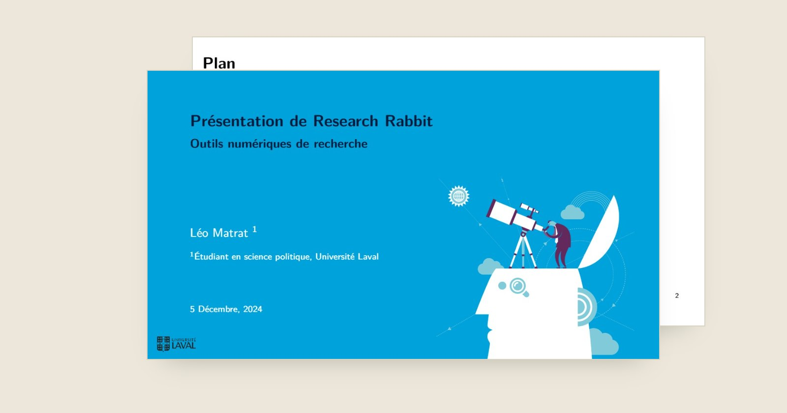

Travail universitaire · Présentation scientifique
ResearchRabbit
Présentation d'un outil de recherche scientifique
Une présentation universitaire de ResearchRabbit, un outil qui aide à explorer la littérature scientifique et les liens entre publications. Composée en LaTeX sur Overleaf, elle retrace l'origine de l'outil, le compare aux outils courants, puis en montre la prise en main.

- Objet
- Présentation de ResearchRabbit, outil d'exploration des publications scientifiques et de leurs relations bibliographiques
- Date
- 5 décembre 2024
- Cadre
- Présentation universitaire, « Outils numériques de recherche », Université Laval
- Outils
- Overleaf, LaTeX (classe Beamer) ; onze diapositives
- Rôle
- Auteur de la présentation. ResearchRabbit est un outil existant, développé par une autre équipe.
Ce que couvre la présentation
- Introduction. Les origines de l'outil et sa place dans la démarche de recherche.
- Comparaison. Accessibilité, fonctionnalités, points forts et limites de Zotero, Mendeley, EndNote, Google Scholar et ResearchRabbit, puis le choix argumenté de ce dernier.
- Prise en main. Créer un compte, rechercher un article ou un auteur, explorer les relations entre publications.